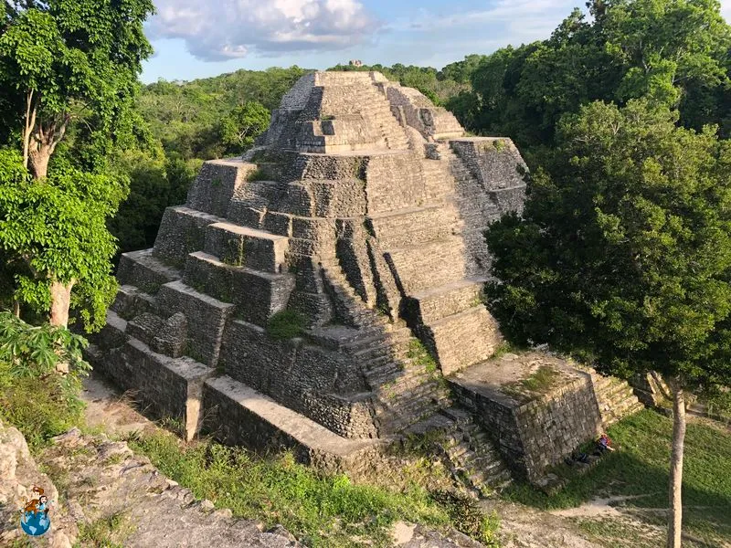

Yaxhá es un importante sitio arqueológico maya situado en el departamento de Petén. Su nombre significa "agua verde azulada", en referencia a la laguna cercana que lleva el mismo nombre.
Yaxhá fue una ciudad aliada de Tikal y es reconocida por sus templos, acrópolis y calzadas, además de las espectaculares vistas desde la cima de sus pirámides, que permiten observar la laguna y la selva.
Ubicación: Departamento de Petén, cerca de la Laguna Yaxhá.
Actividades: Recorridos arqueológicos, observación de fauna silvestre, vistas panorámicas desde los templos y exploración de senderos naturales.
